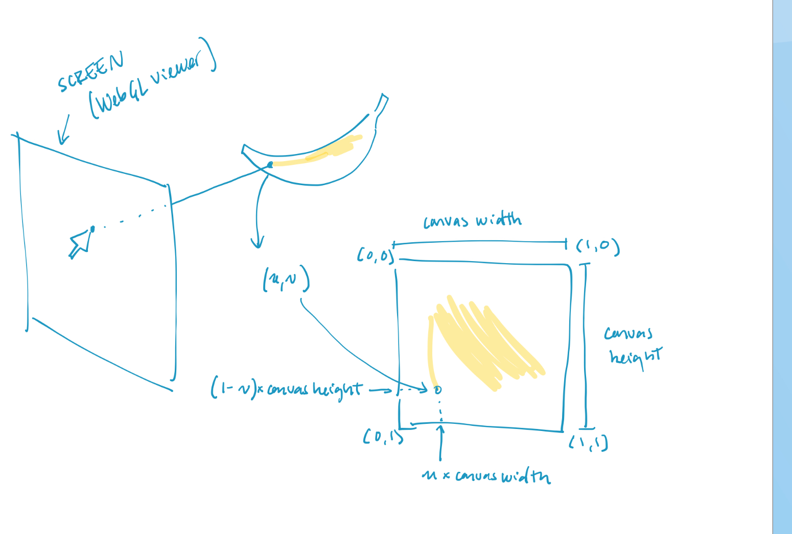

We developed an interactive mesh painting interface in JavaScript. Users can create texture maps by painting directly onto 3D meshes in a viewer, or by painting on UV coordinates in a separate drawing application window. Additionally, users can import their own meshes and texture maps, save their newly created textures, and generate default meshes for painting.
Our platform offers a fast and simple user interface for texturing meshes, catering to quick and casual needs, unlike more complex solutions such as 3D Substance Painter or Blender, used in a more professional context. We achieved this by leveraging front-end tools like the Node.js environment, the Three.js API (which provides methods for creating a WebGL viewer, loading meshes, textures, raycasting, etc.), and the Canvas HTML element.
We broke our project down into several subparts:
We followed the ThreeJS documentation to render something on the screen by setting up a WebGL viewer, a camera, lights, materials, a mesh object, interactivity with the viewer, and set up a raycaster. We also created a list of file paths that referred to a list of mesh objects that we can load when the user presses “Generate Mesh.”
We expanded upon the code from CodingNepal for our drawing app. This implementation is based on the HTML canvas element. Modifications we made (other than the CSS styling) include displaying brush/eraser size as a circle around the moving cursor and supporting texture import and UV display features. We also fixed some details about the original drawing application such as smoother lines and correct alignment of the brush on resized windows.
ThreeJS supports the use of reading a texture file off of an HTML canvas element. We utilized this to directly render a texture map onto our mesh from the drawing app. Because it would be costly to have to update the texture every frame, we chose to only update it when the user draws on the screen.
To implement support for importing files, we began an instance of createElement('input'). This allowed us to define the type of file that we can import and what to do with the contents. Inside the function for the texture images, we mapped it onto the loaded mesh. For loading in a GTLF/GLB, the variables that define the mesh are adjusted to the new mesh that was imported.
This was one of the more challenging parts of the project. Upon researching techniques on how to paint over meshes, we stumbled across a few resources. This demo takes inspiration from the following paper. It dynamically creates and unwraps the UVs of a mesh so that painting on the mesh is fast and efficient as opposed to drawing over a mesh that is already UV unwrapped and static. However, the paper states that the limitations of this program can only be used to paint on meshes casually rather than for animated film or game assets, which require carefully-placed UVs from the start for texture mapping and skinning. Thus, we decided to base our implementation by drawing on a static UV unwrapped mesh, because we wanted our program to mirror other professional 3D paint programs and teach others how UV mapping works.
The diagram below illustrates how we ended up implementing drawing directly onto the mesh via raycasting. ThreeJS has its own raycaster class, and handles intersections with faces on a mesh. Upon calling the intersect method, we can directly obtain the face in which the mouse intersected, and its corresponding interpolated UV coordinates. Once the UV coordinates are obtained, we can calculate their position on the drawing app by scaling with the corresponding width and height of the canvas. We scale (1-v) by the height instead of v because ThreeJS reads the top left UV coordinate as (0,0).
Along the way, we encountered various issues with our project that we had to solve. We highlight the two most prominent problems we successfully tackled below:
Created the 3D WebGL interface and controls using the ThreeJS API, implemented cross-compatibility with the drawing app and 3D viewer , implemented raycasting and UV coordinate transformations for drawing on mesh directly, created the list of meshes to generate, implemented the opacity slider, and attempted to UV map on the deprecated MeshEdit version of our project. Also modeled the anime head.
Implemented promise handling for preloading assets, added a toggleable UV mesh layer for the canvas, did general debugging, and developed draw code and import code in deprecated MeshEdit version.
Implemented brush/erase, drawing app, website styling.
Loading in gtlf/glb files, implementing imports so users can input their own texture or models